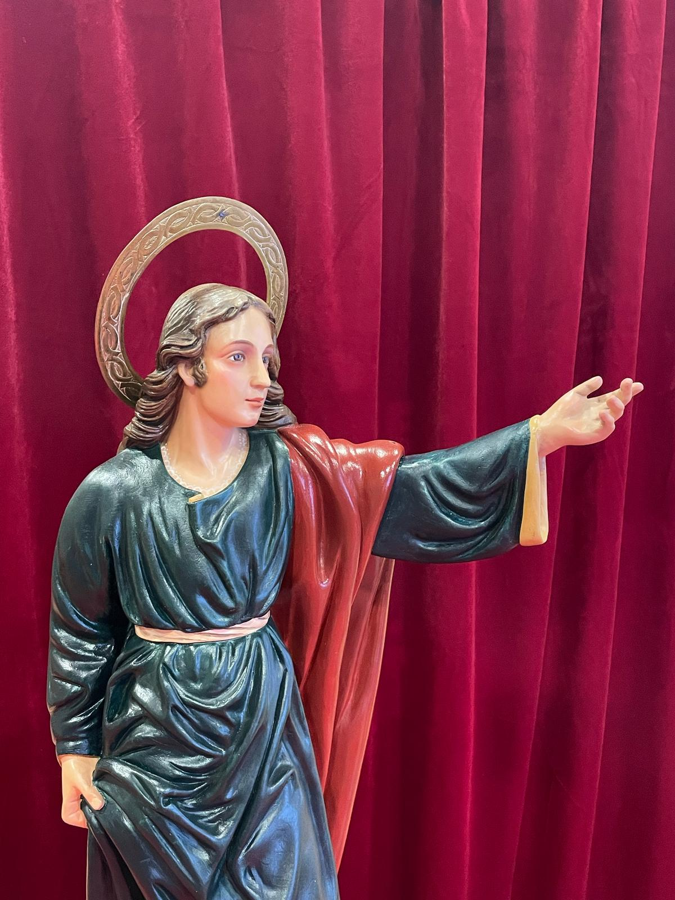
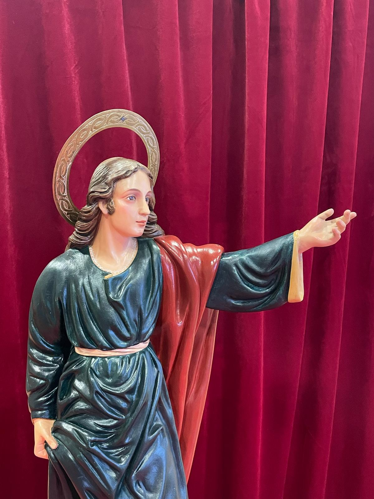

San Juan Evangelista
La imagen de San Juan es nueva y procesionará por primera vez este 2025.
La autoría de la imagen es del escultor y restaurador Pablo Corbalán de Santomera.
Su altura completa con peana y corona es de 73cm de altura.

La imagen de San Juan es nueva y procesionará por primera vez este 2025.
La autoría de la imagen es del escultor y restaurador Pablo Corbalán de Santomera.
Su altura completa con peana y corona es de 73cm de altura.
